Single rollouts rerun with rendering on, the same policy and budgets as the full runs.
Each frame is agentview | wrist camera, with the step and the last completed subtask.
Keyframes are taken at the step each subtask completed. Green: every subtask done.
A row D rollout is not reproducible at a fixed seed, so it can differ from the full run's.
Row A: per segment, the demo's state restored by resume(k) before each
Memory_Exploration/case1, seed 0: 11/12 subtasks
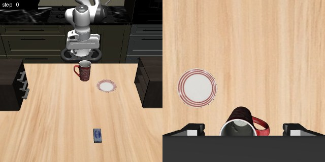
step 0: start
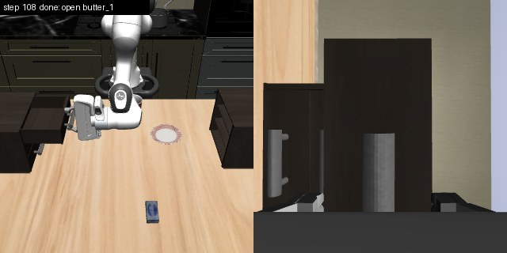
step 108: open butter_1
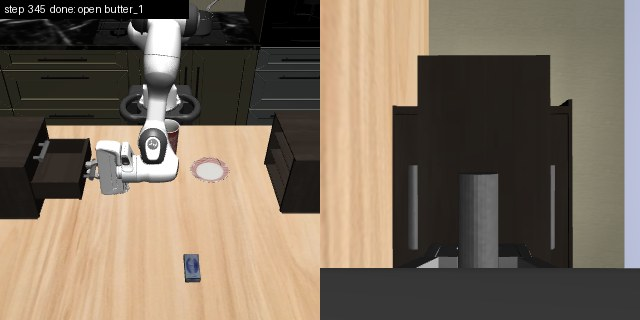
step 345: open butter_1
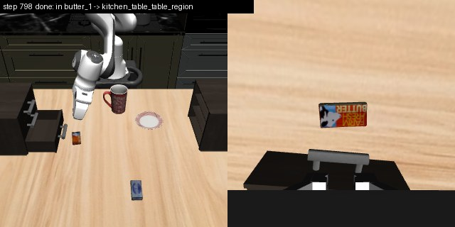
step 798: in butter_1 → kitchen_table_table_region
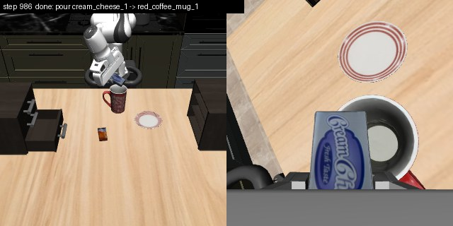
step 986: pour cream_cheese_1 → red_coffee_mug_1
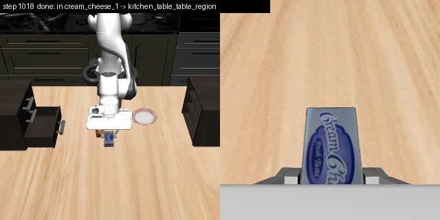
step 1018: in cream_cheese_1 → kitchen_table_table_region
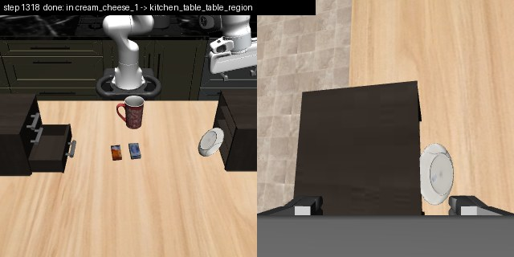
step 1318: last step
step 1 missed: not registered
step 3 missed: not registered
step 4 missed: not registered
step 5 missed: not registered
step 7 missed: no handle of cream_cheese_1 plans
step 10 missed: not registered
step 11 missed: not registered
Row C: continuous, one policy call a segment, no resume(k)
Ideal/case2, seed 0: 4/4 subtasks
step 0: start
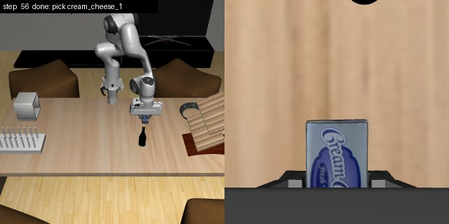
step 56: pick cream_cheese_1
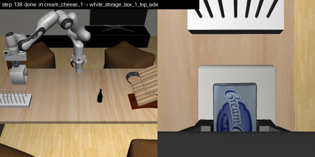
step 138: in cream_cheese_1 → white_storage_box_1_top_side
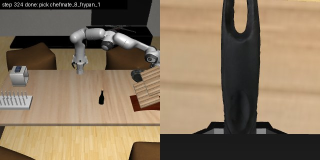
step 324: pick chefmate_8_frypan_1
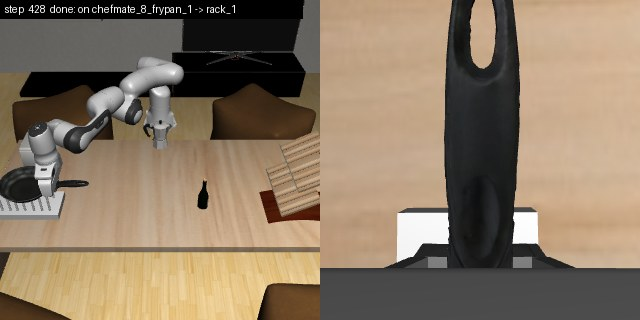
step 428: on chefmate_8_frypan_1 → rack_1step 428: last step
step 2 missed: not registered
Ideal/case6, seed 0: 6/6 subtasks
step 0: start
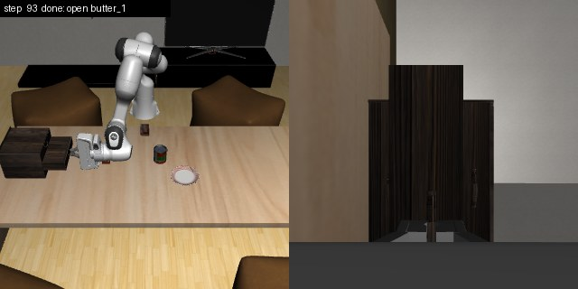
step 93: open butter_1
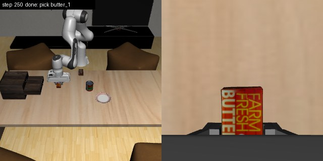
step 250: pick butter_1
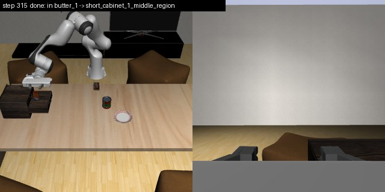
step 315: in butter_1 → short_cabinet_1_middle_region
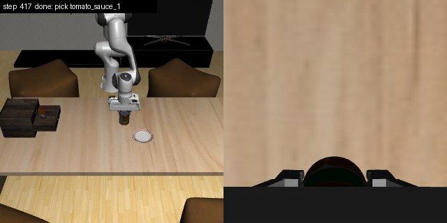
step 417: pick tomato_sauce_1step 456: pour tomato_sauce_1 → plate_1step 531: in tomato_sauce_1 → coffee_table_table_regionstep 531: last step
Ideal/case7, seed 0: 5/7 subtasks
step 0: start
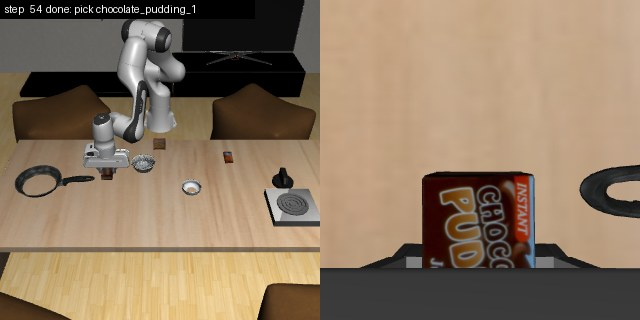
step 54: pick chocolate_pudding_1
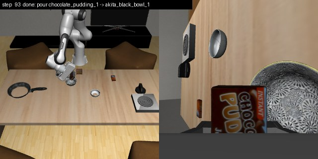
step 93: pour chocolate_pudding_1 → akita_black_bowl_1
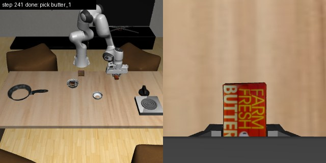
step 241: pick butter_1
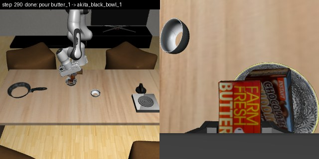
step 290: pour butter_1 → akita_black_bowl_1
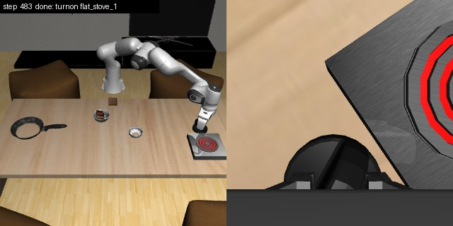
step 483: turnon flat_stove_1
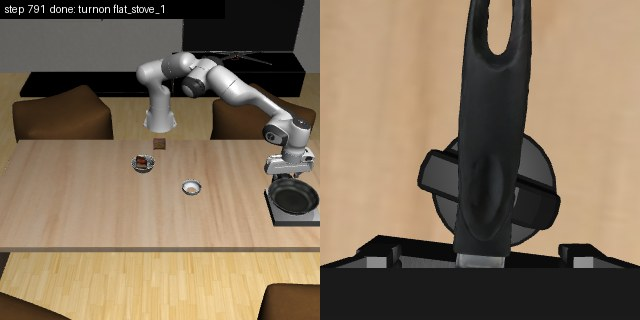
step 791: last step
step 5 missed: not registered
step 6 missed: not registered
Ideal/case8, seed 0: 7/7 subtasks
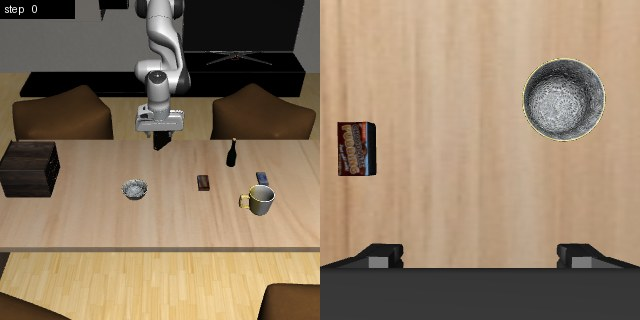
step 0: start
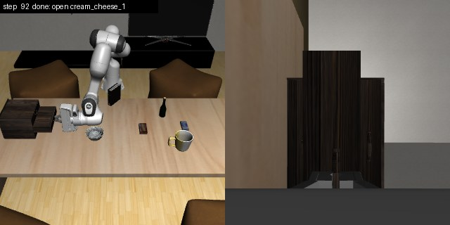
step 92: open cream_cheese_1
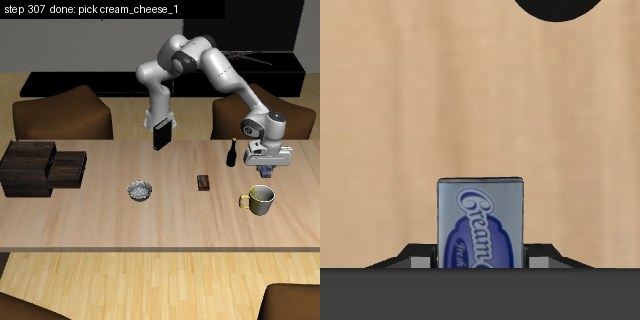
step 307: pick cream_cheese_1step 409: in cream_cheese_1 → short_cabinet_1_middle_region
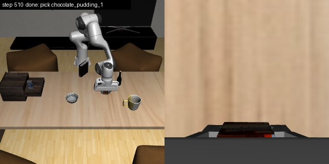
step 510: pick chocolate_pudding_1
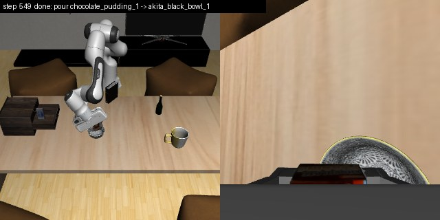
step 549: pour chocolate_pudding_1 → akita_black_bowl_1
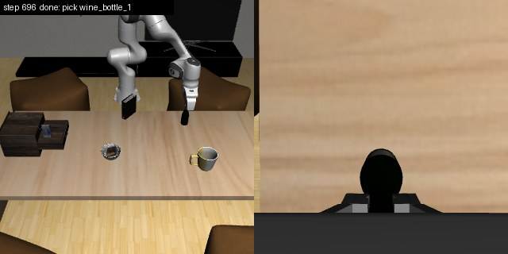
step 696: pick wine_bottle_1step 791: pour wine_bottle_1 → white_yellow_mug_1step 791: last step
step 1 missed: not registered
Ideal/case9, seed 0: 8/11 subtasks
step 0: start
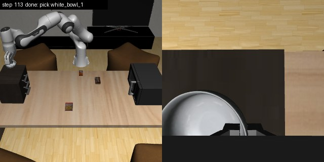
step 113: pick white_bowl_1step 181: in white_bowl_1 → coffee_table_table_region
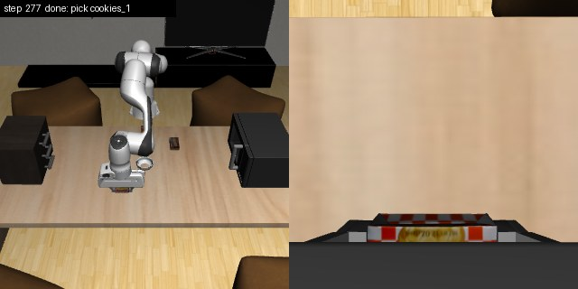
step 277: pick cookies_1
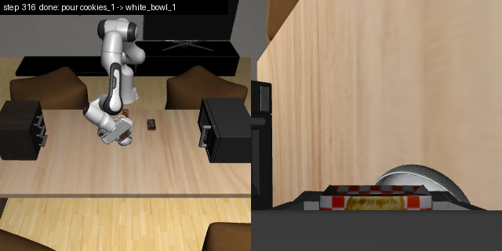
step 316: pour cookies_1 → white_bowl_1
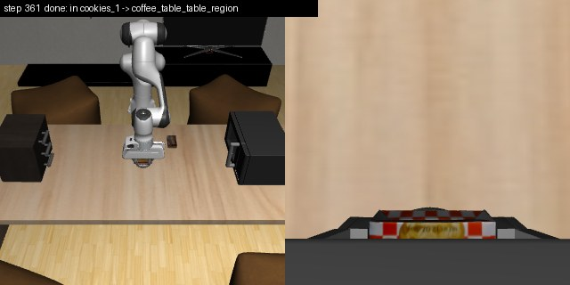
step 361: in cookies_1 → coffee_table_table_region
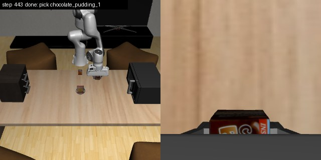
step 443: pick chocolate_pudding_1
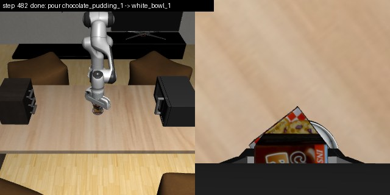
step 482: pour chocolate_pudding_1 → white_bowl_1
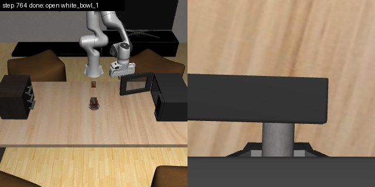
step 764: open white_bowl_1
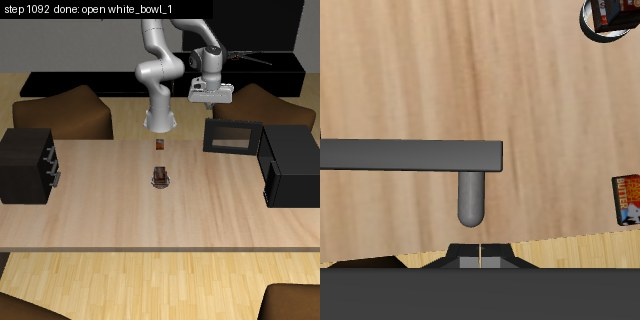
step 1092: last step
step 7 missed: not registered
step 9 missed: the start collides (Collision between object environment/coffee_table_0 and white_bowl_1/base_link_0) and rising does not clear it
step 10 missed: the start collides (Collision between object environment/coffee_table_0 and white_bowl_1/base_link_0) and rising does not clear it
Memory_Execution/case1, seed 0: 4/7 subtasks
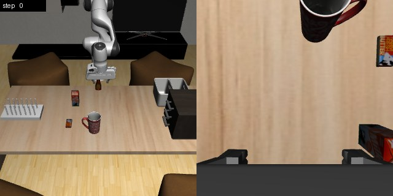
step 0: start
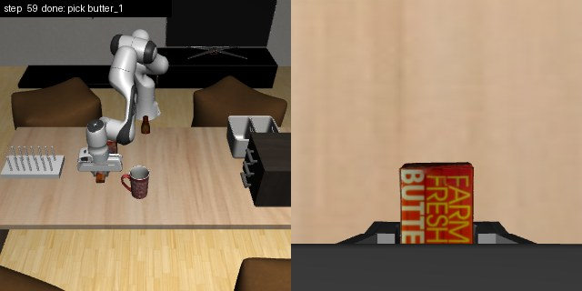
step 59: pick butter_1
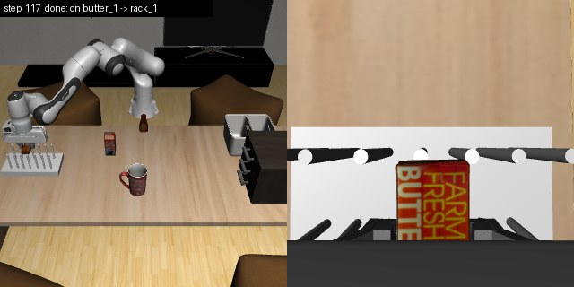
step 117: on butter_1 → rack_1
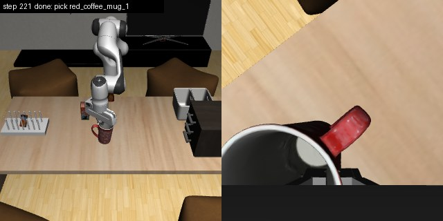
step 221: pick red_coffee_mug_1
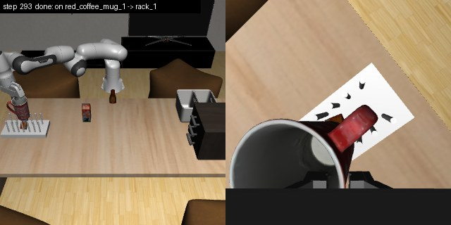
step 293: on red_coffee_mug_1 → rack_1
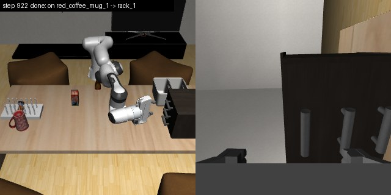
step 922: last step
step 4 missed: not registered
step 5 missed: not registered
step 6 missed: not registered
step 7 missed: tracking stalled in approach
Row D: one long_tamp mission over the whole goal
Ideal/case2, seed 0: 4/4 subtasks
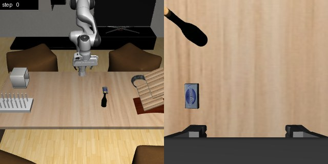
step 0: start
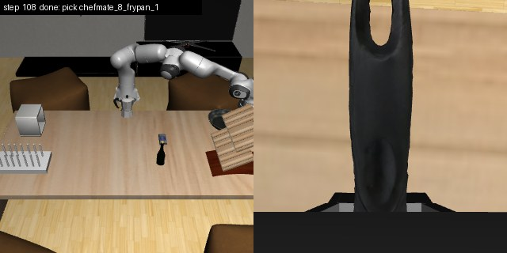
step 108: pick chefmate_8_frypan_1
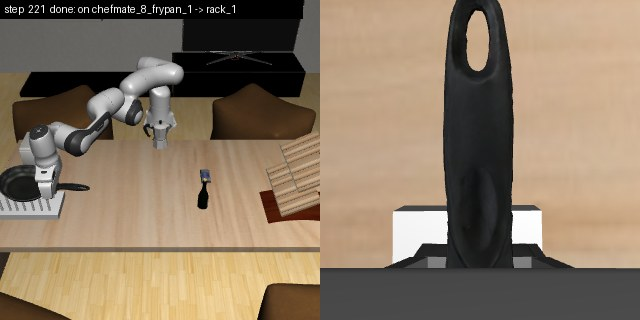
step 221: on chefmate_8_frypan_1 → rack_1
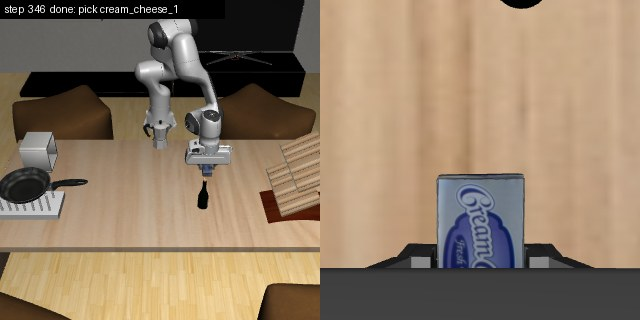
step 346: pick cream_cheese_1
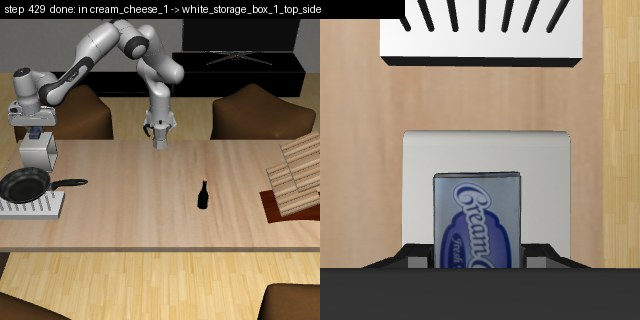
step 429: in cream_cheese_1 → white_storage_box_1_top_sidestep 429: last step
Ideal/case6, seed 0: 5/6 subtasks
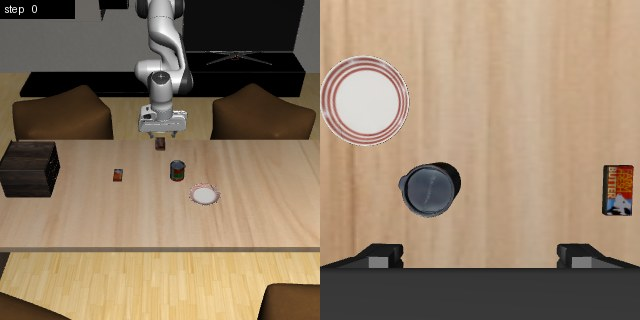
step 0: startstep 93: open butter_1
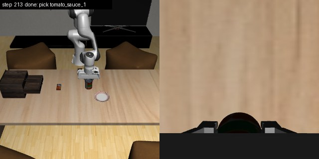
step 213: pick tomato_sauce_1
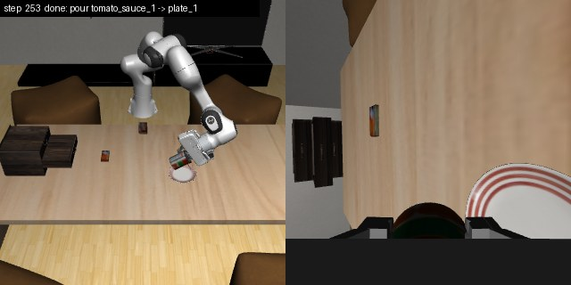
step 253: pour tomato_sauce_1 → plate_1
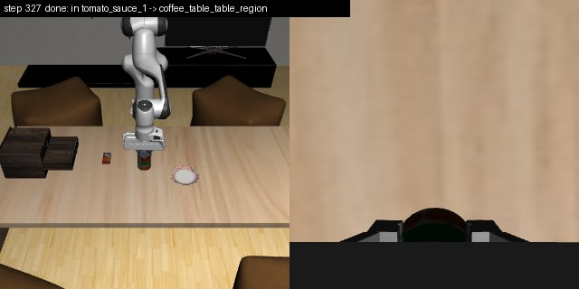
step 327: in tomato_sauce_1 → coffee_table_table_regionstep 438: pick butter_1step 544: last step
given up: butter_1
Ideal/case7, seed 0: 7/7 subtasks
step 0: startstep 112: turnon flat_stove_1step 249: pick chefmate_8_frypan_1step 342: in chefmate_8_frypan_1 → flat_stove_1_cook_regionstep 476: pick chocolate_pudding_1step 516: pour chocolate_pudding_1 → akita_black_bowl_1step 654: pick butter_1step 704: pour butter_1 → akita_black_bowl_1step 704: last step
Ideal/case8, seed 0: 7/7 subtasks
step 0: startstep 92: open cream_cheese_1step 228: pick cream_cheese_1step 330: in cream_cheese_1 → short_cabinet_1_middle_regionstep 449: pick wine_bottle_1step 544: pour wine_bottle_1 → white_yellow_mug_1step 719: pick chocolate_pudding_1step 759: pour chocolate_pudding_1 → akita_black_bowl_1step 759: last step
Ideal/case9, seed 0: 7/11 subtasks
step 0: startstep 113: pick white_bowl_1step 181: in white_bowl_1 → coffee_table_table_regionstep 333: open white_bowl_1step 427: pick white_bowl_1step 473: in white_bowl_1 → microwave_1_heating_regionstep 555: pick chocolate_pudding_1step 653: pick cookies_1step 660: last step